-

Attempt
42 -

Marks Obtained
0 / 65 -

Your score
0.0% -

Time Taken
00 H 27 M 41 S -
Result
Failed
| No | Domain | Total Question | Correct | Incorrect | Unattempted | Marked as Review |
|---|---|---|---|---|---|---|
|
|
|
|
|
|
|
|
|
|
|
|
|
|
|
|
|
|
|
|
|
|
|
|
|
|
|
|
|
|
|
|
|
|
|
|
|
|
|
|
|
|
|
|
|
|
|
|
A customer wants to create EBS Volumes in AWS. The data on the volume is required to be encrypted at rest. How could this be achieved?
Correct Answer – B
When you create a volume, you have an option to encrypt the volume using keys generated by the Key Management Service.
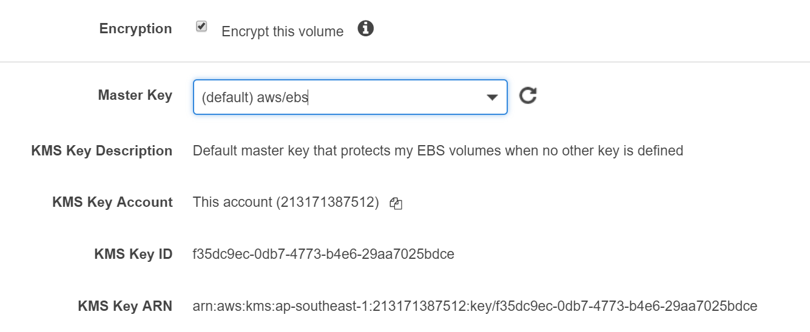
For more information on KMS, please refer to the following URl:
https://docs.aws.amazon.com/kms/latest/developerguide/services-ebs.html
- Option A is incorrect since SSL helps to encrypt data in transit.
- Option C is incorrect because it also does not help in encrypting the data at rest.
- Option D is incorrect because the snapshot of an unencrypted volume is also unencrypted.
A company has a requirement to store 100TB of data to AWS cloud. This data will be exported using AWS Snowball and then should reside in a database layer. The database should have the facility to be queried from a business intelligence application. Each item is roughly 500KB in size. What would be an ideal storage mechanism for the underlying data layer?
Correct Answer - D
For this sheer data size (100TB), the ideal storage unit would be AWS Redshift.
AWS Documentation mentions the following on AWS Redshift:
Amazon Redshift is a fully managed, petabyte-scale data warehouse service in the cloud. You can start with just a few hundred gigabytes of data and scale to a petabyte or more. This enables you to use your data to acquire new insights for your business and customers.
The first step to create a data warehouse is to launch a set of nodes, called an Amazon Redshift cluster. After you provision your cluster, you can upload your data set and then perform data analysis queries. Regardless of the size of the data set, Amazon Redshift offers fast query performance using the same SQL-based tools and business intelligence applications that you use today.
For more information on AWS Redshift, please refer to the URL below.
https://docs.aws.amazon.com/redshift/latest/mgmt/welcome.html
- Option A is incorrect because the maximum data size in DynamoDB is 400KB.
- Option B is incorrect because Aurora supports 64TB of data.
- Option C is incorrect because we can create MySQL, MariaDB, SQL Server, PostgreSQL, and Oracle RDS DB instances with up to 16 TB of storage in RDS.
Try now labs related to this question
This lab walks you through to the creation and testing of an Amazon Relational Database Service (Amazon RDS) database. We will create an RDS MySql Database and test the connection using MySQL Workbench.
- Credit Needed10
- Time 0 : 50
A company is planning on testing a large set of IoT enabled devices. These devices will be streaming data every second. A proper service needs to be chosen in AWS which could be used to collect and analyze these streams in real-time. Which AWS service would be the most appropriate for this purpose?
Correct Answer - B
AWS Documentation mentions the following on Amazon Kinesis:
Amazon Kinesis makes it easy to collect, process, and analyze real-time, streaming data so you can get timely insights and react quickly to new information. Amazon Kinesis offers key capabilities to cost-effectively process streaming data at any scale, along with the flexibility to choose the tools that best suit the requirements of your application. With Amazon Kinesis, you can ingest real-time data such as video, audio, application logs, website clickstreams, and IoT telemetry data for machine learning, analytics, and other applications.
For more information on Amazon Kinesis, please refer to the below URL:
- Option A is incorrect. Amazon EMR can be used to process applications with data-intensive workloads.
- Option B is correct. Amazon Kinesis can be used to store, process, and analyze real-time streaming data.
- Option C is incorrect. SQS is a fully managed message queuing service that makes it easy to decouple and scale microservices, distributed systems, and serverless applications.
- Option D is incorrect. SNS is a flexible, fully managed pub/sub messaging and mobile notifications service for coordinating the delivery of messages to subscribing to endpoints and clients.
Your company currently has a set of EC2 Instances hosted in AWS. The states of these instances need to be monitored and each state change needs to be recorded. Which step could be helpful to fulfill this requirement? (SELECT TWO)
Correct Answer: A and B
Create Alarms That Stop, Terminate, Reboot, or Recover an Instance
Using Amazon CloudWatch alarm actions, you can create alarms that automatically stop, terminate, reboot or recover your instances. You can use the stop or terminate actions to save money when you no longer need an instance. You can use the reboot and recover actions to automatically reboot those instances or recover them onto new hardware if a system impairment occurs.
The AWSServiceRoleForCloudWatchEvents service-linked role enables AWS to perform alarm actions on your behalf. The first time you create an alarm in the AWS Management Console, the IAM CLI, or the IAM API, CloudWatch creates the service-linked role for you.
There are a number of scenarios in which you might want to automatically stop or terminate your instance. For example, you might have instances dedicated to batch payroll processing jobs or scientific computing tasks that run for a period of time and then complete their work. Rather than letting those instances sit idle (and accrue charges), you can stop or terminate them, which could help you to save money. The main difference between using the stop and the terminate alarm actions is that you can easily restart a stopped instance if you need to run it again later, and you can keep the same instance ID and root volume. However, you cannot restart a terminated instance instead, you must launch a new instance.
You can add the stop, terminate, reboot or recover actions to any alarm that is set on an Amazon EC2 per-instance metric, including basic and detailed monitoring metrics provided by Amazon CloudWatch (in the AWS/EC2 namespace), as well as any custom metrics that include the InstanceId dimension, as long as its value refers to a valid running Amazon EC2 instance.
For more information on Amazon EC2, please visit the following URL: https://docs.aws.amazon.com/AWSEC2/latest/UserGuide/ec2-ug.pdf
Breakdown
- Option A is correct. Using Cloudwatch logs collect, store, view, and search logs from AWS and non-AWS resources.
- Option B is correct. CloudWatch alarms are used to trigger notifications for any metric. Alarms can go to auto-scaling, EC2 actions(stop, terminate, recover, or reboot) and SNS notifications.
- Option C is incorrect as SQS cannot be used for monitoring.
- Option D is incorrect as AWS Lambda cannot be used for monitoring.
Please refer the below link for more information on Cloudwatch:
https://docs.aws.amazon.com/AmazonCloudWatch/latest/monitoring/acw-ug.pdf
Try now labs related to this question
This lab walks you through the various CloudWatch features available which are used for resource monitoring.
- Credit Needed10
- Time 0 : 45
You have instances hosted in a private subnet in a VPC. There is a need for instances to download updates from the Internet. As an architect, what change would you suggest to the IT Operations team that would also be the most efficient and secure?
Correct Answer – C
The NAT Gateway is an ideal option to ensure that instances in the private subnet have the ability to download updates from the Internet.
For more information on the NAT Gateway, please refer to the below URL:
- Option A is incorrect because there may be a security reason for keeping these instances in the private subnet. (for example DB instances)
- Option B is incorrect. The instances in the private subnet may be running various applications and DB instances. Hence, it is not advisable or practical for an EC2 Instance to download the updates separately and then push them to the required instance.
- Option D is incorrect because a VPC link is not used to connect to the Internet.
Try now labs related to this question
-
Learn how to build Public and Private subnets from scratch.
-
VPC wizard will not be used. So every component required to build public and private subnets will be created and configured manually.
-
This will give an in-depth understanding of internal components of VPC and subnets.
- Credit Needed10
- Time 0 : 30
You have created a VPC in Paris region, and one public subnet in each Availability Zone eu-west-3a, eu-west-3b, and eu-west-3c of the same region, and each subnet having one EC2 instance inside it.
Now you want to launch ELB nodes in two AZs out of three available. How many private IP addresses will be used by ELB nodes at the initial launch of ELB?
Correct Answer: Option B
Option A is incorrect because the problem statement is we would like to launch the ELB nodes in just two subnets out of three. So the third subnet need not have the ELB node inside it, and hence no IP address will be consumed.
Option B is correct. Whenever we launch the ELB, the ELB service will create a node in each subnet.
Option C is incorrect. Whenever we launch an ELB, the ELB service won't consume an IP address, it’s the ELB node which consumes IP address.
Option D is incorrect as the IP addresses are assigned to the nodes at the initial launch of the ELB service.
Diagrams:
a. Before creation of ELB and EC2 instances, each subnet has 4091 Available IP addresses.
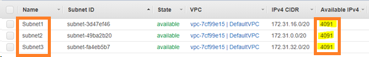
b. After the creation of EC2 instance, each Subnet holding EC2 will consume one IP hence the resulting number of Available IPs will be 4090.
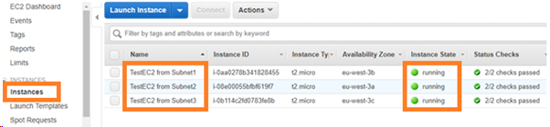
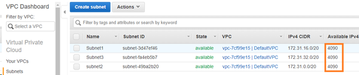
c. Create ELB and add two subnets (in this case subnet1 and subnet3) out of three to the ELB service and save it.
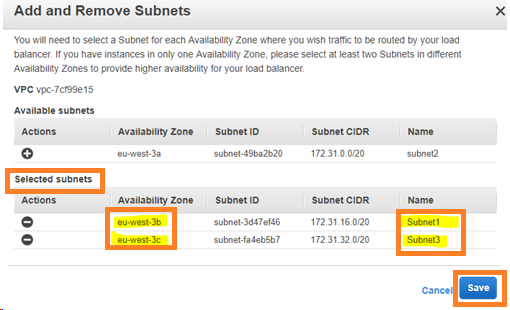
d. Now the resulting Available IP’s will be 4089, 4089 and 4090. Hence TWO IP addresses are consumed by the ELB nodes present in Subnet1 and Subnet3.
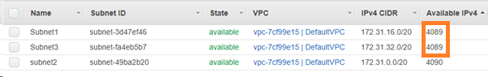
Try now labs related to this question
-
Learn how to build Public and Private subnets from scratch.
-
VPC wizard will not be used. So every component required to build public and private subnets will be created and configured manually.
-
This will give an in-depth understanding of internal components of VPC and subnets.
- Credit Needed10
- Time 0 : 30
A company plans to have its application hosted in AWS. This application allows the users to upload files and then using a public URL for downloading them at a later stage. Which design would help fulfill this requirement?
Correct Answer – B
If you need storage for the Internet, AWS Simple Storage Service (S3) is the best option. Each uploaded file automatically gets a public URL, which can be used to download the file at a later point of time.
For more information on Amazon S3, please refer to the below URL:
- Options A and D are incorrect because EBS Volumes or Snapshots do not have Public URL.
- Option C is incorrect because Glacier is mainly used for data archiving purposes.
Try now labs related to this question
This lab walks you through to Amazon Simple Storage Service. Amazon S3 has a simple web services interface that you can use to store and retrieve any amount of data, at any time, from anywhere on the web. In this lab we will demonstrate AWS S3 by creating a sample S3 bucket, uploading an object to S3 bucket and setting up bucket permission and policy.
- Credit Needed10
- Time 0 : 30
You have planned to host a web application on AWS. You create an EC2 Instance in a public subnet which needs to connect to an EC2 Instance that will host an Oracle database. Which steps would ensure a secure setup? (SELECT TWO)
Correct Answer – B and C
The best and most secure option is to place the database in a private subnet. The below diagram from AWS Documentation shows this setup. Also, you ensure that access is not allowed from all sources but only from the web servers.

For more information on this type of setup, please refer to the below URL:
https://docs.aws.amazon.com/AmazonVPC/latest/UserGuide/VPC_Scenario2.html
- Option A is incorrect because as per the best practice guidelines, DB instances are placed in Private subnets and allowed to communicate with web servers in the public subnet.
- Option D is incorrect because allowing all incoming traffic from the Internet to the DB instance is a security risk.
Try now labs related to this question
-
Learn how to build Public and Private subnets from scratch.
-
VPC wizard will not be used. So every component required to build public and private subnets will be created and configured manually.
-
This will give an in-depth understanding of internal components of VPC and subnets.
- Credit Needed10
- Time 0 : 30
An EC2 Instance hosts a Java-based application that accesses a DynamoDB table. This EC2 Instance is currently serving production users. What would be a secure way for the EC2 Instance to access the DynamoDB table?
Correct Answer - A
Always assign a role to the EC2 Instance to ensure secure access to AWS resources from EC2 Instances.
For more information on IAM Roles, please refer to the below URL:
An IAM role is similar to a user; it is an AWS identity with permission policies that determine what the identity can and cannot do in AWS. However, instead of being uniquely associated with one person, a role is intended to be assumable by anyone who needs it. Also, an IAM role does not have standard long-term credentials (password or access keys) associated with it. Instead, if a user assumes a role, temporary security credentials are created dynamically and provided to the user.
You can use roles to delegate access to users, applications, or services that normally don't have access to your AWS resources.
Note:
You can attach IAM role to the existing EC2 instance. To know more, please visit the following URL:
A company planning to build and deploy a web application on AWS needs to have a data store to store session data. Which AWS services should be used to meet this requirement? (SELECT TWO)
Correct Answer – C and D
AWS Documentation mentions the following:
Amazon ElastiCache offers fully managed Redis and Memcached. It seamlessly deploys, operates, and scales popular open source compatible in-memory data stores. It builds data-intensive apps or improves the performance of your existing apps by retrieving data from high throughput and low latency in-memory data stores. Amazon ElastiCache is a popular choice for Gaming, Ad-Tech, Financial Services, Healthcare, and IoT apps.
For more information on ElastiCache, please refer to the URL below.
https://aws.amazon.com/elasticache/
- Option A is incorrect. RDS is a distributed relational database. It is a web service running "in the cloud" designed to simplify the setup, operation, and scaling of a relational database for use in applications.
- Option B is incorrect. SQS is a fully managed message queuing service that makes it easy to decouple and scale microservices, distributed systems, and serverless applications.
- Option C is correct. Consider only storing a unique session identifier in an HTTP cookie and storing more detailed user session information on the server side. Most programming platforms provide a native session management mechanism that works this way. However, user session information is often stored on the local file system by default and results in a stateful architecture.
A common solution to this problem is to store this information in a database. Amazon DynamoDB is a great choice because of its scalability, high availability, and durability characteristics. For many platforms, there are open source drop-in replacement libraries that allow you to store native sessions in Amazon DynamoDB.4
For more information, please refer to the AWS best practices white paper - Page 8.
https://d1.awsstatic.com/whitepapers/AWS_Cloud_Best_Practices.pdf
- Option D is correct. In order to address scalability and to provide a shared data storage for sessions that can be accessed from any individual web server, you can abstract the HTTP sessions from the web servers themselves. A common solution for this is to leverage an In-Memory Key/Value store such as Redis and Memcached.
In-memory caching improves application performance by storing frequently accessed data items in memory so that they can be retrieved without access to the primary data store. Properly leveraging caching can result in an application that not only performs better but also costs less at scale. Amazon ElastiCache is a managed service that reduces the administrative burden of deploying an in-memory cache in the cloud.
Please refer to the following white paper for more information.
https://d0.awsstatic.com/whitepapers/performance-at-scale-with-amazon-elasticache.pdf
A company has set up an application in AWS that interacts with DynamoDB. It is required that when an item is modified in a DynamoDB table, immediate entry is made to the associating application. How can this be accomplished? (SELECT TWO)
Correct Answer – C and D
When you enable DynamoDB Streams on a table, you can associate the stream ARN with a Lambda function that you write. Immediately after an item in the table is modified, a new record appears in the table's stream. AWS Lambda polls the stream and invokes your Lambda function synchronously when it detects new stream records. Since our requirement is to have an immediate entry made to an application in case an item in the DynamoDB table is modified, a lambda function is also required.
Let us try to analyze this with an example:
Consider a mobile gaming app that writes to a GamesScores table. Whenever the top score of the Game Scores table is updated, a corresponding stream record is written to the table's stream. This event could then trigger a Lambda function that posts a Congratulatory message on a Social media network handle.
DynamoDB streams can be used to monitor the changes to a DynamoDB table.
AWS Documentation mentions the following:
A DynamoDB stream is an ordered flow of information about changes to items in an Amazon DynamoDB table. When you enable a stream on a table, DynamoDB captures information about every modification to data items in the table.
For more information on DynamoDB streams, please refer to the URL below.
Note:
DynamoDB is integrated with Lambda so that you can create triggers to events in DynamoDB Streams.
If you enable DynamoDB Streams on a table, you can associate the stream ARN with a Lambda function that you write. Immediately after an item in the table is modified, a new record appears in the table's stream.
AWS Lambda polls the stream and invokes your Lambda function synchronously when it detects new stream records. Since our requirement states that an item modified in a DynamoDB table causes an immediate entry to an associating application, a lambda function is also required.
For more information on DynamoDB streams Lambda, please refer to the URL below.
You are working as an AWS Consultant for an E-Commerce organization. The organization is planning to migrate to a managed database service using Amazon RDS. To avoid any business loss due to any deletion in the database, the management team is looking for a backup process which will restore Database at any specific time during the last month. Which action should be performed as a part of Amazon RDS Automated backup process?
Correct Answer – A
During automated backup, Amazon RDS performs a storage volume snapshot of the entire Database Instance. Also, it captures transaction logs every 5 minutes. To restore a DB instance at a specific point of time, a new DB instance is created using this DB snapshot.
- Option B is incorrect as Database Snapshots are the manual backups initiated by users, not by AWS. These Backups can be performed at any time.
- Option C is incorrect as Database Snapshots are the manual backups initiated by users, not by AWS.
- Option D is incorrect as AWS performs storage volume snapshot on a daily basis, not every 12 hours.
For more information on Amazon RDS Automated backup process and Restoring a DB instance to a specified time, refer to the following URL:
https://docs.aws.amazon.com/AmazonRDS/latest/UserGuide/USER_WorkingWithAutomatedBackups.html
An application currently uses AWS RDS MySQL as its data layer. Due to recent performance issues on the database, it has been decided to separate the querying part of the application by setting up a separate reporting layer. What should be an additional step to improve the performance of the underlying database?
Correct Answer - C
AWS Documentation mentions the following:
Amazon RDS Read Replicas provide enhanced performance and durability for database (DB) instances. This feature makes it easy to elastically scale out beyond the capacity constraints of a single DB instance for read-heavy database workloads. You can create one or more replicas of a given source DB Instance and serve high-volume application read traffic from multiple copies of your data, thereby increasing aggregate read throughput
For more information on Amazon Read Replicas, please refer to the URL below.
Try now labs related to this question
This lab walks you through to the creation and testing of an Amazon Relational Database Service (Amazon RDS) database. We will create an RDS MySql Database and test the connection using MySQL Workbench.
- Credit Needed10
- Time 0 : 50
As a Solutions Architect for a multinational organization having more than 150000 employees, management has decided to implement a real-time analysis for their employees' time spent in offices across the globe. You are tasked to design an architecture that will receive the inputs from 10000+ sensors with swipe machine sending in and out data across the globe, each sending 20KB data every 5 Seconds in JSON format. The application will process and analyze the data and upload the results to dashboards in real-time.
Other application requirements will include the ability to apply real-time analytics on the captured data, processing of captured data will be parallel and durable, the application must be scalable as per the requirement as the load varies and new sensors are added or removed at various facilities. The analytic processing results are stored in a persistent data storage for data mining.
What combination of AWS services would be used for the above scenario?
Correct Answer - B
-
Option A is incorrect. EMR is not for receiving the real-time data from thousands of sources, EMR is mainly used for Hadoop ecosystem-based data used for Big data analysis.
- Option B is correct as the Amazon Kinesis streams are used to read the data from thousands of sources like social media, survey-based data, etc. The Kinesis streams can be used to analyze the data and can feed it using AWS EMR to the analytics-based database like RedShift which works on OLAP.
- Option C is incorrect, SQS cannot be used to read the real-time data from thousands of sources. Besides, the Kinesis Firehose is used to ship the data to other AWS service, not for the analysis. And finally, RDS is again an OLTP based database.
- Option D is incorrect as the AWS EMR can read large amounts of data, however, RDS is a transactional database that works based on the OLTP. Thus, it cannot store the analytical data.
An application running on EC2 Instances processes sensitive information stored on Amazon S3. This information is accessed over the Internet. The security team is concerned that the Internet connectivity to Amazon S3 could be a security risk. Which solution will resolve this security concern?
Correct Answer – D
AWS Documentation mentions the following:
A VPC endpoint enables you to privately connect your VPC to supported AWS services and VPC endpoint services powered by PrivateLink without requiring an internet gateway, NAT device, VPN connection or AWS Direct Connect connection. Instances in your VPC do not require public IP addresses to communicate with resources in the service. Traffic between your VPC and the other service does not leave the Amazon network.
For more information on VPC endpoints, please refer to the URL below.
https://docs.aws.amazon.com/AmazonVPC/latest/UserGuide/vpc-endpoints.html
- Option A is incorrect. An Internet Gateway is a horizontally scaled, redundant, and highly available VPC component that allows communication between instances in your VPC and the Internet.
- Option B is incorrect. A VPN (Virtual Private Network) allows you to create a secure connection to another network over the Internet.
- Option C is incorrect. You can use a Network Address Translation (NAT) gateway to enable instances in a private subnet to connect to the Internet or other AWS services, but prevent the internet from initiating a connection with those instances.
You have designed an application that uses AWS resources, such as S3 to operate and store users’ documents. You currently use Cognito identity pools and user pools. To increase usage and ease of signing up, you decide that adding social identity federation is the best path forward.
How would you differentiate the Cognito identity pool and the federated identity providers (e.g. Google)?
Correct Answer - D
- Option D is correct. Sign-in through a third party (federation) is available in Amazon Cognito user pools. This feature is independent of the federation through Amazon Cognito identity pools (federated identities).
- Option A is incorrect. Cognito identity pool and the federated identity providers are separate, independent authentication methods.
- Option B is incorrect. Only one log-in event is needed, not two.
- Option C is incorrect. Identity providers authenticate users, not authenticate services.
For more information, refer to the following URLs:
- https://docs.aws.amazon.com/cognito/latest/developerguide/cognito-user-pools-identity-federation.html
- https://docs.aws.amazon.com/IAM/latest/UserGuide/id_roles_providers_oidc.html
- https://aws.amazon.com/articles/web-identity-federation-with-mobile-applications/
- https://docs.aws.amazon.com/cognito/latest/developerguide/cognito-getting-started.html
You have a web application hosted on an EC2 Instance in AWS which is being accessed by users across the globe. The Operations team has been receiving support requests about extreme slowness from users in some regions. What can be done to the architecture to improve the response time for these users?
Correct Answer – D
AWS Documentation mentions the following:
Amazon CloudFront is a web service that speeds up distribution of your static and dynamic web content, such as .html, .css, .js, and image files to your users. CloudFront delivers your content through a worldwide network of data centers called edge locations. When a user requests content that you're serving with CloudFront, the user is routed to the edge location that provides the lowest latency (time delay) so that content is delivered with the best possible performance.
For more information on Amazon CloudFront, please refer to the below URL:
https://docs.aws.amazon.com/AmazonCloudFront/latest/DeveloperGuide/Introduction.html
- Option A is incorrect. The latency issue is experienced by people from certain parts of the world only. So, increasing the number of EC2 Instances or increasing the instance size will not make much difference.
- Option B is incorrect. The latency issue is experienced by people from certain parts of the world only. So, changing the Instance type to a higher instance type will not make much difference.
- Option C is incorrect. Route 53 health checks are meant to see whether the instance status is healthy or not.
Since this case deals with responding to requests from users, we do not have to worry about this. However, for improving latency issues, CloudFront is a good solution.
You currently have your EC2 instances running in multiple availability zones. You have a NAT gateway defined for your private instances and you want to make this highly available. How could this be accomplished?
Correct Answer - B
AWS Documentation mentions the following:
If you have resources in multiple Availability Zones and they share one NAT Gateway, in the event that the NAT Gateway’s Availability Zone is down, resources in the other Availability Zones lose internet access. To create an Availability Zone-independent architecture, create a NAT Gateway in each Availability Zone and configure your routing to ensure that resources use the NAT Gateway in the same Availability Zone.
For more information on the NAT Gateway, please refer to the below URL:
Try now labs related to this question
This lab walks you through the steps to Create A NAT Gateway and allow internet access to Instance in Private Subnet.
- Credit Needed10
- Time 0 : 45
A company wants to have a fully managed data store in AWS. It should be a compatible MySQL database, which is an application requirement. Which AWS database engine could be used for this purpose?
Correct Answer - B
AWS Documentation mentions the following:
Amazon Aurora (Aurora) is a fully managed, MySQL and PostgreSQL compatible, relational database engine. It combines the speed and reliability of high-end commercial databases with the simplicity and cost-effectiveness of open-source databases. It delivers up to five times the throughput of MySQL and up to three times the throughput of PostgreSQL without requiring changes to most of your existing applications.
For more information on AWS Aurora, please refer to the URL below.
Note:
RDS is a generic service to provide Relational Database service which supports 6 database engines. They are Aurora, MySQL, MariaDB, PostgreSQL, Oracle, and Microsoft SQL Server. Our question is to select MySQL compatible database from the options provided. Out of the given options, Amazon Aurora is a MySQL and PostgreSQL compatible enterprise-class database.
Hence Option B is the correct answer.
**If you see the question "A company wants to have a fully managed data store in AWS. It should be a compatible MySQL database, which is an application requirement. Which database engine could be used for this purpose?", We have to select the database engine. RDS is not the correct answer because RDS is not a database engine. MySQL is one of the offerings of the RDS service. This question is about understanding the terminology.**
Try now labs related to this question
This lab walks you through the creation and testing of an Amazon Aurora database. We will create an Aurora MySQL Database and and test the connection.
- Credit Needed10
- Time 1 : 0
A Solutions Architect is designing an online shopping application running in a VPC on EC2 Instances behind an Elastic Load Balancer. The instances run in an Auto Scaling group across multiple Availability Zones. The application tier must read and write data to a customer-managed database cluster. There should be no access to the database from the Internet but the cluster must be able to obtain software patches from the Internet. Which VPC design meets these requirements?
Correct Answer – C
The following diagram from AWS Documentation shows the right setup for this scenario: 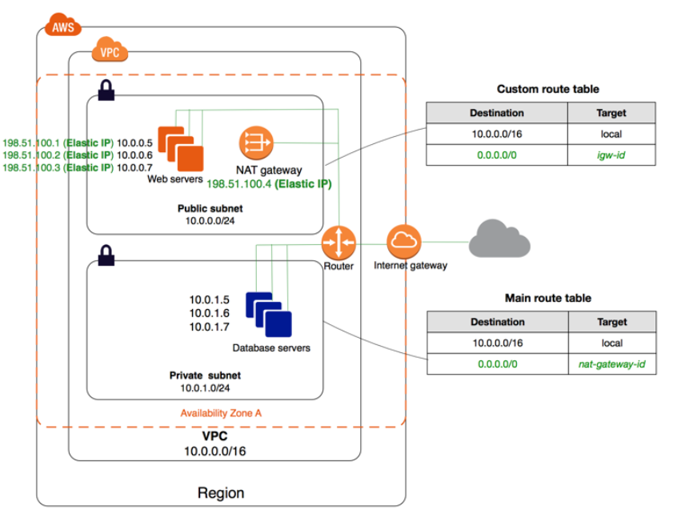
We always need to keep NAT gateway on public Subnet only, because it needs to communicate the Internet.
AWS says that "To create a NAT gateway, you must specify the public subnet in which the NAT gateway should reside. You must also specify an Elastic IP address to associate with the NAT gateway when you create it. After you've created a NAT gateway, you must update the route table associated with one or more of your private subnets to point Internet-bound traffic to the NAT gateway. This enables instances in your private subnets to communicate with the internet."
For more information on this setup, please refer to the below URL:
NOTE:
Here the requirement is that "There should be no access to the database from the Internet, but the cluster must be able to obtain software patches from the Internet."
1) There should be no access to the database from the Internet.
To achieve this step, we have to launch the database inside the private subnet.
2) But the cluster must be able to obtain software patches from the Internet.
For this, we have to create NAT Gateway inside the Public Subnet. Because the subnet with internet gateway attached is known as Public Subnet. Through the NAT Gateway, a database inside the Private subnet can access the internet. Option D is saying that "Use private subnet for NAT gateway".
Option C includes these discussed Points and thus, it's a perfect answer.
Try now labs related to this question
This lab walks you through the steps to Create A NAT Gateway and allow internet access to Instance in Private Subnet.
- Credit Needed10
- Time 0 : 45
It is expected that only certain specified customers can upload images to the S3 bucket for a certain period of time. What would you suggest as an architect to fulfill this requirement?
Correct Answer – B
The S3 bucket owner can create Pre-Signed URLs to upload the images to S3.
For more information on Pre-Signed URLs, please refer to the URL below.
- Option A is incorrect. Since Amazon has provided us with an inbuilt function for this requirement, using this option is expensive and time-consuming. As a Solution Architect, you are supposed to pick the best and cost-effective solution.
- Option C is incorrect. ECS is a highly scalable, fast, container management service that makes it easy to run, stop, and manage Docker containers on a cluster.
- Option D is incorrect. SQS is a message queue service used by distributed applications to exchange messages through a polling model and not through a push mechanism.
Note:
This question is based on the scenario where we can use the pre-signed URL.
You need to understand about pre-signed URL - which contains the user login credentials particular resources, such as S3 in this scenario. And user must have the permission enabled that other application can use the credential to upload the data (images) in S3 buckets.
AWS Definition:
"A pre-signed URL gives you access to the object identified in the URL, provided that the creator of the pre-signed URL has permissions to access that object. That is, if you receive a pre-signed URL to upload an object, you can upload the object only if the creator of the pre-signed URL has the necessary permissions to upload that object.
All objects and buckets by default are private. The pre-signed URLs are useful if you want your user/customer to be able to upload a specific object to your bucket, but you don't require them to have AWS security credentials or permissions. When you create a pre-signed URL, you must provide your security credentials and then specify a bucket name, an object key, an HTTP method (PUT for uploading objects), and expiration date and time. The pre-signed URLs are valid only for the specified duration."
For more information, please visit the following URL:
A company requires to use the AWS RDS service to host a MySQL database. This database is going to be used for production purposes and is expected to experience a high number of read/write activities. Which EBS volume type would be ideal for this database?
Correct Answer - B
The below snapshot from AWS Documentation shows that the ideal storage option in this scenario is the Provisioned IOPS SSD since it provides a high number of IOPS for the underlying database.
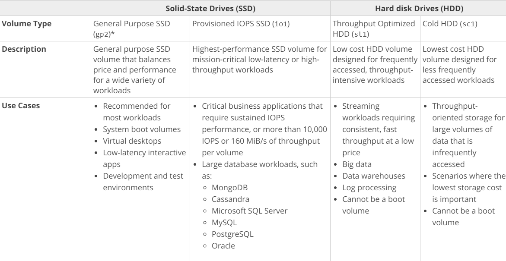
For more information on EBS volume types, please refer to the URL below.
https://docs.aws.amazon.com/AWSEC2/latest/UserGuide/EBSVolumeTypes.html
Try now labs related to this question
This lab walks you through to the creation and testing of an Amazon Relational Database Service (Amazon RDS) database. We will create an RDS MySql Database and test the connection using MySQL Workbench.
- Credit Needed10
- Time 0 : 50
You have a set of on-premises virtual machines used to serve a web-based application. You need to ensure that a virtual machine if unhealthy is taken out of the rotation. Which of the following options would be used for health checking and DNS failover features for a web application running behind ELB, to increase redundancy and availability.
Correct Answer - A
Route 53 health checks can be used for any endpoint that can be accessed via the Internet. Hence, this would be an ideal option for monitoring endpoints.
AWS Documentation mentions the following:
You can configure a health check that monitors an endpoint that you specify either by IP address or by the domain name. At regular intervals that you specify, Route 53 submits automated requests over the internet to your application, server or other resources to verify that it's reachable, available and functional.
For more information on Route 53 Health checks, please refer to the URL below.
Note:
As per AWS, once enabled, Route 53 automatically configures and manages health checks for individual ELB nodes. Route 53 also takes advantage of the EC2 instance health checking that ELB performs. By combining the results of health checks of your EC2 instances and your ELBs, Route 53 DNS Failover is able to evaluate the health of the load balancer and the health of the application running on the EC2 instances behind it. In other words, if any part of the stack goes down, Route 53 detects the failure and routes traffic away from the failed endpoint.
For more information on Amazon Route 53 ELB Integration DNS Failover, please visit the following URL:
- https://aws.amazon.com/blogs/aws/amazon-route-53-elb-integration-dns-failover/
-
https://aws.amazon.com/premiumsupport/knowledge-center/route-53-dns-health-checks/
AWS documentation states that you can create a Route 53 resource record that points to an address outside AWS. You can set up health checks for parts of your application running outside AWS, and you can failover to any endpoint that you choose, regardless of location.
For example, you may have a legacy application running in a datacenter outside AWS and a backup instance of that application running within AWS. You can set up health checks of your legacy application running outside AWS, and if the application fails the health checks, you can failover automatically to the backup instance in AWS.
Please refer to the following URL for more information:
Note:
As per AWS, Route 53 has health checkers in different locations around the world. When you create a health check that monitors an endpoint, health checkers start to send requests to the endpoint that you specify to determine whether the endpoint is healthy. You can choose which locations you want Route 53 to use, and you can specify the interval between checks: every 10 seconds or every 30 seconds. Note that Route 53 health checkers in different data centers don't coordinate with one another, so you'll sometimes see several requests per second regardless of the interval you chose, followed by a few seconds with no health checks at all.
Each health checker evaluates the health of the endpoint based on two values:
- Response time
- Whether the endpoint responds to a number of consecutive health checks that you specify (the failure threshold)
Route 53 aggregates the data from the health checkers and determines whether the endpoint is healthy:
- If more than 18% of health checkers report that an endpoint is healthy, Route 53 considers it healthy.
- If 18% of health checkers or fewer report that an endpoint is healthy, Route 53 considers it unhealthy.
The response time that an individual health checker uses to determine whether an endpoint is healthy depends on the type of health check:
HTTP and HTTPS health checks, TCP health checks or HTTP and HTTPS health checks with string matching.
Regarding your specific query where we are having more than 2 servers for the website, AWS docs state that:
When you have more than one resource performing the same function—for example, more than one HTTP server or mail server—you can configure Amazon Route 53 to check the health of your resources and respond to DNS queries using only the health resources. For example, suppose your website, example.com, is hosted on six servers, two each in three data centers around the world. You can configure Route 53 to check the health of those servers and to respond to DNS queries for example.com using only the servers that are currently healthy. The configuration details are provided in the second link.
Please refer to the following links for more information.
A company has a set of web servers. It is required to ensure that all the logs from these web servers can be analyzed in real-time for any sort of threat detection. What could be the right choice in this regard?
Correct Answer – B
AWS Documentation provides the following information to support this requirement:
Amazon Kinesis makes it easy to collect, process, and analyze real-time, streaming data so you can get timely insights and react quickly to new information. Amazon Kinesis offers key capabilities to process streaming data cost-effectively at any scale, along with the flexibility to choose the tools that best suit the requirements of your application. With Amazon Kinesis, you can ingest real-time data such as video, audio, application logs, website clickstreams, and IoT telemetry data for machine learning, analytics, and other applications.
For more information on Amazon Kinesis, please refer to the below URL:
https://aws.amazon.com/kinesis/
You currently have the following architecture in AWS:
a. A couple of EC2 Instances located in us-west-2a
b. The EC2 Instances are launched via an Auto Scaling group.
c. The EC2 Instances sit behind a Classic ELB.
Which additional step would ensure that the above architecture conforms to a well-architected framework?
Correct Answer - D
AWS Documentation provides the following information to support this concept:
Balancing resources across Availability Zones is a best practice for well-architected applications, as this greatly increases aggregate system availability. Auto Scaling automatically balances EC2 instances across zones when you configure multiple zones in your Auto Scaling group settings. Auto Scaling always launches new instances such that they are balanced between zones as evenly as possible across the entire fleet.
For more information on managing resources with Auto Scaling, please refer to the URL below.
https://aws.amazon.com/blogs/compute/fleet-management-made-easy-with-auto-scaling/
Your company manages an application that currently allows users to upload images to an S3 bucket. These images are picked up by EC2 Instances for processing and then placed in another S3 bucket. You need an area where the metadata for these images can be stored. What would be an ideal data store for this?
Correct Answer - C
- Option A is incorrect because this is normally used for petabyte based storage.
- Option B is incorrect because this is used for archive storage.
- Option C is correct. AWS DynamoDB is the best, light-weight and durable storage option for metadata.
- Option D is incorrect because this used for messaging purposes.
For more information on DynamoDB, please refer to the URL below.
https://aws.amazon.com/dynamodb/
An application team needs to quickly provision a development environment consisting of a web and database layer. What would be the quickest and most ideal way to get this set up in place?
Correct Answer – D
AWS Documentation mentions the following:
With Elastic Beanstalk, you can quickly deploy and manage applications in the AWS Cloud without worrying about the infrastructure that runs those applications. AWS Elastic Beanstalk reduces management complexity without restricting choice or control. You simply upload your application, and Elastic Beanstalk automatically handles the details of capacity provisioning, load balancing, scaling, and application health monitoring.
For more information on AWS Elastic Beanstalk, please refer to the URL below.
- Option A is incorrect. Amazon EC2 Spot instances are spare compute capacity in the AWS cloud available to you at steep discounts compared to On-Demand prices.
- Option B is incorrect. A Reserved Instance is a reservation of resources and capacity, for either one or three years for a particular Availability Zone within a region.
- Option C is incorrect. AWS Lambda is a compute service that makes it easy for you to build applications that respond quickly to new information and not for provisioning a new environment.
Currently, the Elastic Beanstalk environment supports the following configurations:
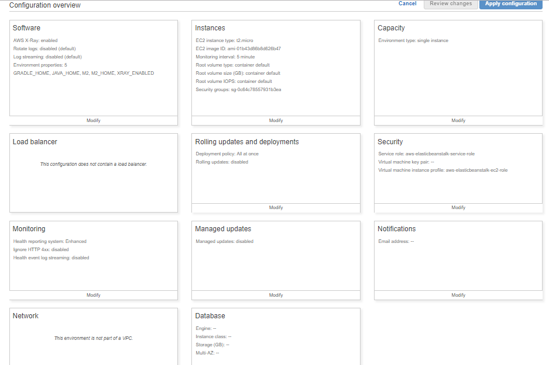
It supports RDS.
Database Configuration Setting
AWS Elastic Beanstalk provides connection information to your instances by setting environment properties for the database hostname, username, password, table name, and port. When you add a database to your environment, its lifecycle is tied to your environments.
Third-party sign-in (Federation) has been implemented in your web application to allow users who need access to AWS resources. Users have been successfully logging in using Google, Facebook, and other third-party credentials. Suddenly, their access to some AWS resources has been restricted. What is the most likely cause of the restricted use of AWS resources?
Correct Answer: A
- Option A is correct. When IAM policies are changed, they can impact the user experience and services they can connect to.
- Option B is incorrect. Federation is used to authenticate users, not to authorize services.
- Option C is incorrect. Federation is used to authenticate users, not to authorize services.
- Option D is incorrect. The identity providers don’t have the capability to authorize services; they authenticate users.
References:
A company has an application that stores images and thumbnails on S3. The thumbnail needs to be available for download immediately. Additionally, both the images and thumbnails are not accessed frequently. What would be the cost-efficient storage option that meets the above-mentioned requirements?
Correct Answer – B
Amazon S3 Infrequent access is perfect if you want to store data that is not frequently accessed. It is more cost-effective than Option D (Amazon S3 Standard). If you choose Amazon Glacier with Expedited Retrievals, you defeat the whole purpose of the requirement, because of its increased cost.
For more information on AWS Storage Classes, please visit the following URL:
Try now labs related to this question
This lab walks you through to Amazon Simple Storage Service. Amazon S3 has a simple web services interface that you can use to store and retrieve any amount of data, at any time, from anywhere on the web. In this lab we will demonstrate AWS S3 by creating a sample S3 bucket, uploading an object to S3 bucket and setting up bucket permission and policy.
- Credit Needed10
- Time 0 : 30
You have an EC2 Instance placed inside a public subnet. It is required to ensure that the EC2 Instance has complete access to the Internet. What would be helpful to accomplish this?
Correct Answer – C
AWS Documentation mentions the following:
An Internet Gateway is a horizontally scaled, redundant, and highly available VPC component that allows communication between instances in your VPC and the Internet. It, therefore, imposes no availability risks or bandwidth constraints on your network traffic.
For more information on the Internet Gateway, please visit the following URL:
https://docs.aws.amazon.com/AmazonVPC/latest/UserGuide/VPC_Internet_Gateway.html
Try now labs related to this question
-
Learn how to build Public and Private subnets from scratch.
-
VPC wizard will not be used. So every component required to build public and private subnets will be created and configured manually.
-
This will give an in-depth understanding of internal components of VPC and subnets.
- Credit Needed10
- Time 0 : 30
You have an application hosted on AWS consisting of EC2 Instances launched via an Auto Scaling Group. You notice that the EC2 Instances are not scaling out on demand. Which checks should be done to ensure that the scaling occurs as expected? (Select 2)
Correct Answer – A and B
There could be a number of reasons as mentioned in AWS Documentation but only options A and B are applicable from the given choices.
Option A is correct because if your scaling events are not based on the right metrics and do not have the right threshold defined, then the scaling will not occur as you want it to happen.
Option B is correct because f two policies are executed at the same time, Amazon EC2 Auto Scaling follows the policy with the greater impact. For example, if you have one policy to add two instances and another policy to add four instances, Amazon EC2 Auto Scaling adds four instances when both policies are triggered at the same time.
Option C is incorrect because health checks will help us know the health status of an Auto Scaling instance. It is not a Check if AutoScaling is not working as expected. It is a health check for Instance.
Option D is incorrect because AutoScaling can be used without Load Balancer also.
For more information on Auto Scaling Dynamic Scaling and troubleshooting, please visit the following URsL:
Try now labs related to this question
AWS Auto Scaling will automatically scale resources as needed to align to your selected scaling strategy, This lab walks you through to use Auto Scaling to automatically launch or terminate EC2’s instances based on user defined policies, schedules and health checks.
- Credit Needed10
- Time 0 : 55
A company hosts a popular web application that connects to an Amazon RDS MySQL DB instance, running in a private VPC subnet created with default ACL settings. The web servers must be accessible only to customers on an SSL connection and the database should only be accessible to web servers in a public subnet. As an architect, what would you not recommend for such an architecture?
Correct Answer – C
The question is describing a scenario where it has been instructed that the database servers should only be accessible to web servers in the public subnet.
You have been asked which one of the following is not a recommended architecture based on the scenario.
Option C is correct as it allows all the incoming traffic from the internet to the database port which is not acceptable as per the architecture.
A similar setup is given in AWS Documentation:
1) To ensure that traffic can flow into your Web server from anywhere on secure traffic, you need to allow inbound traffic on port 443 (HTTPS).
2) You need to then ensure that traffic can flow from the database server to the web server via the database security group.
The below snapshot from AWS Documentation shows the tables for rules for the security groups which relate to the same requirements as the question.
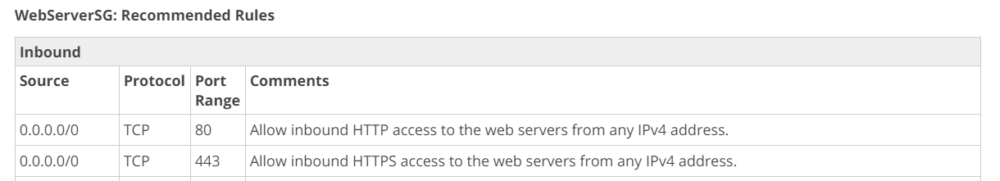
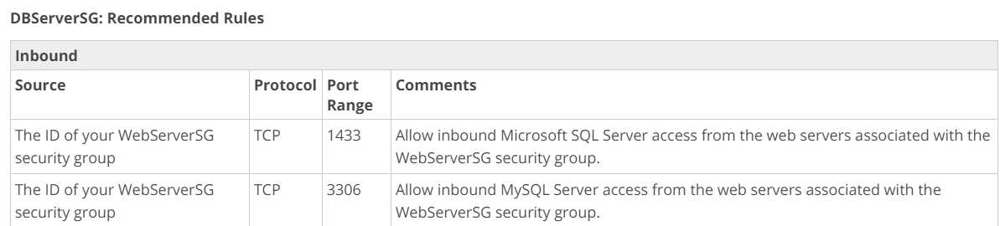
For more information on this use case scenario, please visit the following URL:
The requirement in the question states that the database servers should only be accessible to the web servers in the public subnet.
The question asks that the database should only be accessible to the webservers in the public subnet.
Option D says Database Server Security Group allows MySQL Inbound traffic from Web server security group that means request traffic from the Web server is allowed to the DB server. Since security groups are stateful, the response will also be allowed from DB to the webserver. Thus, allowing the communication between them, option D is recommended in combination with A, and B.
This option is wrong with respect to the question is explicitly asking about the solution that is NOT recommended.
Note:
The question asks you to find out which of the following is not recommend Hence Option C is the answer.
If it was asked which Architecture is recommended, then Option A, B, and D would be correct.
Your company has designed an app and requires it to store data in DynamoDB. The company has registered the app with identity providers so users can sign-in using third-parties like Google and Facebook. What must be in place such that the app can obtain temporary credentials to access DynamoDB?
Correct Answer: C
Option C is correct. The user will have to assume a role that has the permissions to interact with DynamoDB.
Option A is incorrect. Multi-factor authentication is available, but not required
Option B is incorrect. CloudTrail is recommended for auditing but is not required
Option D is incorrect. A second log-in event to the management console is not required
References:
Try now labs related to this question
This lab walks you through the steps on how to create IAM Users, IAM Groups and adding IAM User to the IAM Group in AWS IAM service
- Credit Needed10
- Time 0 : 20
A company has an entire infrastructure hosted on AWS. It requires to create code templates used to provision the same set of resources in another region in case of a disaster in the primary region. Which AWS service can be helpful in this regard?
Correct Answer – B
AWS Documentation provides the following information to support this requirement:
AWS CloudFormation provisions your resources in a safe and repeatable manner, allowing you to build and rebuild your infrastructure and applications, without having to perform manual actions or write custom scripts. CloudFormation takes care of determining the right operations to perform while managing your stack and rolls back changes automatically if errors are detected.
For more information on AWS CloudFormation, please visit the following URL:
https://docs.aws.amazon.com/AWSCloudFormation/latest/UserGuide/Welcome.html
Try now labs related to this question
This lab walks you through to AWS CloudFormation features. In this lab, we will demonstrate the use AWS CloudFormation Stack in creating a simple LAMP Server.
- Credit Needed10
- Time 0 : 30
You are working as an AWS Architect for a start-up company. The company has web-servers deployed in all AZ’s in eu-central-1 (Frankfurt) region. These web servers serve German news & local web content for people accessing these websites within Germany. These web servers have multiple records created for a single domain. Company is looking for a random selection of web-servers that will increase the availability. What would be the most appropriate routing policy for this requirement?
Correct Answer – C
When Route 53 is configured with Multi-value answer routing, it returns multiple values for web-servers. Route 53 responds to DNS queries with up to eight healthy records and traffic is approximately load-balanced between these multiple web-servers.
Option A is incorrect. Latency routing policy is used when multiple resources are mapped with single domain & resource with the best latency to the resource is provided. Since most of the times these servers will be accessing locally from the German region, latency to the web servers will be approximately the same.
Option B is incorrect. Weighted routing policy is used when multiple resources are mapped with a single domain & you need to route traffic in a weighted proportionate to each resource. As in this case, the requirement is to use all web servers randomly, the weighted routing policy will not be an ideal option.
Option D is incorrect as Geolocation routing policy is used to choose resources based upon the user's location. In this case, all users will be Germany-based & so there would not be random selection on the resource.
For more information on using Multi-value Answer Routing for Route 53, refer to the following URL:
Your recent security review revealed a large spike in attempted logins to your AWS account. With respect to sensitive data stored in encryption enabled S3, the data has not been encrypted and is susceptible to fraud if it was to be stolen. You’ve recommended AWS Key Management Service as a solution. Which of the following is true regarding the operation of KMS?
Correct Answer: B
- Option B is correct. Data is encrypted at rest; data is encrypted once uploaded to S3. Encryption while in transit is handled by SSL or by using client-side encryption.
- Option A is incorrect. Data can be encrypted/decrypted using AWS keys or keys provided by your company
- Option C is incorrect. Users are granted permissions explicitly, not by default by KMS
- Option D is incorrect. Data is not decrypted in transit (while moving to and from S3). Data is encrypted or decrypted while in S3 and then while in transit can be encrypted using SSL.
References:
- https://docs.aws.amazon.com/AmazonS3/latest/dev/UsingEncryption.html
- ttps://d1.awsstatic.com/whitepapers/AWS_Securing_Data_at_Rest_with_Encryption.pdf
- https://aws.amazon.com/kms/faqs/
- https://docs.aws.amazon.com/general/latest/gr/rande.html#kms_region
- https://www.slideshare.net/AmazonWebServices/encryption-and-key-management-in-aws
Your company has a set of EC2 Instances hosted in AWS. It is mandatory to prepare for disasters and come up with the necessary disaster recovery procedures. What would be helpful in mitigating the effects of a disaster for the EC2 Instances?
Correct Answer – D
You can create an AMI from the EC2 Instances and then copy them to another region. In case of a disaster, an EC2 Instance can be created from the AMI.
- Options A and B are good for fault tolerance, but cannot help completely in disaster recovery for the EC2 Instances.
- Option C is incorrect because we cannot determine if CloudFront would be helpful in this scenario or not without knowing what is hosted on the EC2 Instance.
For disaster recovery, we have to make sure that we can launch instances in another region when required. Hence, options A, B and C are not the feasible solutions.
For more information on AWS AMIs, please visit the following URL:
Try now labs related to this question
This lab walks you through the steps to create AMI from Amazon EC2 Instance. You will practice using Amazon Machine Images to launch Amazon EC2 Instance and Create AMI of that EC2 Instance.
- Credit Needed10
- Time 0 : 30
A company currently hosts a Redshift cluster in AWS. For security reasons, it should ensure that all traffic from and to the Redshift cluster does not go through the Internet. Which features can be used to fulfill this requirement in an efficient manner?
Correct Answer - A
AWS Documentation mentions the following:
When you use Amazon Redshift Enhanced VPC Routing, Amazon Redshift forces all COPY and UNLOAD traffic between your cluster and your data repositories through your Amazon VPC.
If Enhanced VPC Routing is not enabled, Amazon Redshift routes traffic through the Internet, including traffic to other services within the AWS network.
For more information on Redshift Enhanced Routing, please visit the following URL:
https://docs.aws.amazon.com/redshift/latest/mgmt/enhanced-vpc-routing.html
A company has a set of Hyper-V machines and VMware virtual machines. They are now planning to migrate these resources to the AWS Cloud. What should they use to move these resources to the AWS Cloud?
Correct Answer - B
AWS Server Migration Service (SMS) is an agentless service which makes it easier and faster for you to migrate thousands of on-premises workloads to AWS. AWS SMS allows you to automate, schedule, and track incremental replications of live server volumes, making it easier for you to coordinate large-scale server migrations.
For more information on AWS Server Migration Service, please visit the following URL:
You’ve implemented AWS Key Management Service to protect your data in your applications and other AWS services. Your global headquarters is in Northern Virginia (US East (N. Virginia)) where you created your keys and have provided the appropriate permissions to designated users and specific roles within your organization. While the N. American users are not having issues, German and Japanese users are unable to get KMS to function. What is the most likely cause of it?
Correct Answer: C
- Option C is correct. This is the most likely cause as the application should be sure to hit correct region endpoint.
- Option A is incorrect. KMS is offered in several regions but keys are not transferrable out of the region they were created in.
- Option B is incorrect. CloudTrail is recommended for auditing but is not required
- Option D is incorrect. The keys are working as expected where they were created; keys are region-specific
References:
A company with a set of Admin jobs (.NET core) currently set up in the C# programming language, is moving its infrastructure to AWS. What would be an efficient mean of hosting the Admin related jobs in AWS?
Correct Answer - B
The best and most efficient option is to host the jobs using AWS Lambda. This service has the facility to have the code run in the C# programming language.
AWS Documentation mentions the following on AWS Lambda:
AWS Lambda is a compute service that lets you run code without provisioning or managing servers. AWS Lambda executes your code only when needed and scales automatically, from a few requests per day to thousands per second. You pay only for the compute time you consume - there is no charge when your code is not running. With AWS Lambda, you can run code virtually for any type of application or backend service - all with zero administration.
For more information on AWS Lambda, please visit the following URL:
Try now labs related to this question
This lab walks you through creation and usage of AWS Serverless service called AWS Lambda. In this lab, we will create a sample lambda function which is triggered on S3 Object upload event and makes a copy of that object on another S3 Bucket.
- Credit Needed10
- Time 0 : 30
Your company has a set of resources hosted on the AWS Cloud. As part of the new governing model, there is a requirement that all API activity on AWS resources should be monitored. What is the most efficient way to have this implemented?
Answer – D
AWS Documentation mentions the following on AWS CloudTrail:
AWS CloudTrail is a service that enables governance, compliance, operational auditing, and risk auditing of your AWS account. With CloudTrail, you can log, continuously monitor, and retain account activity related to actions across your AWS infrastructure. CloudTrail provides event history of your AWS account activity, including actions taken through the AWS Management Console, AWS SDKs, command line tools, and other AWS services. This event history simplifies security analysis, resource change tracking, and troubleshooting.
Visibility into your AWS account activity is a key aspect of security and operational best practices. You can use CloudTrail to view, search, download, archive, analyze, and respond to account activity across your AWS infrastructure. You can identify who or what took which action, what resources were acted upon, when the event occurred, and other details to help you analyze and respond to activity in your AWS account.
You can integrate CloudTrail into applications using the API, automate trail creation for your organization, check the status of trails you create, and control how users view CloudTrail events.
- More information is available at the below URLs:
You are planning to use Docker containers on a cluster of EC2 instances. These EC2 instances will be launched in a VPC and will require access to ECR and S3 to download Docker images and other images respectively. Additionally, the EC2 instances require secure connectivity to the ECS control plane.
You have created public and private subnets to launch the EC2 instances. What would be helpful to enable secure connectivity and ensure all container orchestration traffic stays within the VPC? (SELECT TWO)
Correct Answer – C and D
Gateway VPC Endpoint provides secure private access to Amazon S3 and DynamoDB without traffic routing via the Internet. When Gateway Endpoints are created, VPC Endpoint is created along with the addition of S3 prefixes in the routing table, pointing to VPCE.
AWS PrivateLink provides secure private access to various AWS services by adding an Elastic Network Interface within a VPC. AWS creates a local/ regional DNS entry which resolves to the local IP address assigned to ENI.
- Option A is incorrect as AWS PrivateLink does not support access to Amazon S3. Amazon S3 can be accessed privately from a VPC via Gateway VPC Endpoint.
- Options B and E are incorrect as with this, the Traffic from EC2 instance to ECS, ECR, and Amazon S3 will be flowing over the Internet.
- Option F is incorrect as Gateway VPC Endpoint does not support access to Amazon ECR; it supports private access only to Amazon S3 & Amazon DynamoDB.
For more information on VPC, Gateway VPC Endpoints, and AWS PrivateLink, refer to the following URLs:
A company currently uses Redshift in AWS. The Redshift cluster is required to be used in a cost-effective manner. As an architect, what would you consider to ensure cost-effectiveness?
Correct Answer - B
AWS Documentation mentions the following:
Amazon Redshift provides free storage for snapshots that is equal to the storage capacity of your cluster until you delete the cluster. After you reach the free snapshot storage limit, you are charged for any additional storage at the normal rate. Because of this, you should evaluate how many days you need to keep automated snapshots and configure their retention period accordingly and delete any manual snapshots that you no longer need.
For more information on working with Redshift Snapshots, please visit the following URL:
https://docs.aws.amazon.com/redshift/latest/mgmt/working-with-snapshots.html
Note:
Redshift pricing is based on the following elements.
- Compute node hours
- Backup Storage
- Data transfer – There is no data transfer charge for data transferred to or from Amazon Redshift and Amazon S3 within the same AWS Region. For all other data transfers into and out of Amazon Redshift, you will be billed at standard AWS data transfer rates.
- Data scanned
There is no additional charge for using Enhanced VPC Routing. You might incur additional data transfer charges for certain operations, such as UNLOAD to Amazon S3 in a different region or COPY from Amazon EMR or SSH with public IP addresses.
Enhanced VPC routing does not incur any cost but any Unload operation to a different region will incur a cost. With Enhanced VPC routing or without it, any data transfer to a different region incurs the cost.
But with Storage, increasing your backup retention period or taking additional snapshots increases the backup storage consumed by your data warehouse. There is no additional charge for backup storage up to 100% of your provisioned storage for an active data warehouse cluster. Any amount of storage exceeding this limit incurs the cost.
For Redshift, spot Instances is not an option
Amazon Redshift pricing options include:
- On-Demand pricing: no upfront costs - you simply pay an hourly rate based on the type and number of nodes in your cluster.
- Amazon Redshift Spectrum pricing: enables you to run SQL queries directly against all of your data, out to exabytes. In Amazon S3 - you simply pay for the number of bytes scanned.
- Reserved Instance pricing: enables you to save up to 75% over On-Demand rates by committing to using Redshift for a 1 or 3-year term.
A company has a set of resources hosted in an AWS VPC. Having acquired another company with its own set of resources hosted in AWS, it is required to ensure that resources in the VPC of the parent company can access the resources in the VPC of the child company. How could this be accomplished?
Correct Answer - D
AWS Documentation mentions the following about VPC Peering:
A VPC Peering Connection is a networking connection between two VPCs that enables you to route traffic between them privately. Instances in either VPC can communicate with each other as if they are within the same network. You can create a VPC Peering Connection between your own VPCs, with a VPC in another AWS account, or with a VPC in a different AWS region.
For more information on VPC Peering, please visit the following URL:
https://docs.aws.amazon.com/AmazonVPC/latest/UserGuide/vpc-peering.html
NAT Instance, NAT Gateway, and VPN do not allow VPC-VPC connectivity.
An application consists of the following architecture:
a. EC2 Instances in a single AZ behind an ELB
b. A NAT Instance which is used to ensure that instances can download updates from the Internet
What could be done to ensure better fault tolerance in this set up? (SELECT TWO)
Correct Answer – B and C
AWS Documentation mentions the following:
Adding Auto Scaling to your application architecture is one way to maximize the benefits of the AWS Cloud. When you use Auto Scaling, your applications gain the following benefits:
- Better fault tolerance. Auto Scaling can detect when an instance is unhealthy. Then it terminates that instance, and launches an instance to replace it. You can also configure Auto Scaling to use multiple Availability Zones. If one Availability Zone becomes unavailable, Auto Scaling can launch instances in another one to compensate.
- Better availability. Auto Scaling can help you ensure that your application always has the right amount of capacity to handle the current traffic demands.
For more information on the benefits of Auto Scaling, please visit the following URL:
Try now labs related to this question
-
Learn how to build Public and Private subnets from scratch.
-
VPC wizard will not be used. So every component required to build public and private subnets will be created and configured manually.
-
This will give an in-depth understanding of internal components of VPC and subnets.
- Credit Needed10
- Time 0 : 30
A company has a lot of data hosted on their On-premises infrastructure. Running out of storage space, the company wants a quick win solution using AWS. Which of the following would allow easy extension of their data infrastructure to AWS?
Correct Answer - A
Volume Gateways and Cached Volumes can be used to start storing data in S3.
AWS Documentation mentions the following:
You store your data in Amazon Simple Storage Service (Amazon S3) and retain a copy of frequently accessed data subsets locally. Cached volumes offer substantial cost savings on primary storage and minimize the need to scale your storage on-premises. You also retain low-latency access to your frequently accessed data.
For more information on Storage Gateways, please visit the following URL:
Note:
The question states that they are running out of storage space and they need a solution to store data with AWS rather than a backup. So for this purpose, gateway-cached volumes are appropriate which will help them to avoid scaling their on-premises data center and allows them to store on AWS storage service while having the most recent files available for them at low latency.
This is the difference between Cached and stored volumes:
-
Cached volumes – You store your data in S3 and retain a copy of frequently accessed data subsets locally. Cached volumes offer substantial cost savings on primary storage and "minimize the need to scale your storage on-premises. You also retain low-latency access to your frequently accessed data."
-
Stored volumes – If you need low-latency access to your entire data set, first configure your on-premises gateway to store all your data locally. Then asynchronously back up point-in-time snapshots of this data to Amazon S3. "This configuration provides durable and inexpensive off-site backups that you can recover to your local data center or Amazon EC2." For example, if you need replacement capacity for disaster recovery, you can recover the backups to Amazon EC2.
As described in the answer: The company wants a quick win solution to store data with AWS, avoiding scaling the on-premise setup rather than backing up the data.
In the question, they mentioned that "A company has a lot of data hosted on their On-premises infrastructure." From On-premises to cloud infrastructure, you can use AWS storage gateways. Option C is talking about the data store. But here the requirement is (How) to transfer or migrate your data from On-premises to Cloud infrastructure. So there is no clear process mentioned in Option C.
A company has a sales team and each member of this team uploads their sales figures daily. A Solutions Architect needs a durable storage solution for these documents and also a way to preserve documents from accidental deletions. Which of the following choices would deliver protection against unintended user actions?
Correct Answer - B
Amazon S3 has an option for versioning as shown below. Versioning is on the bucket level and can be used to recover prior versions of an object.
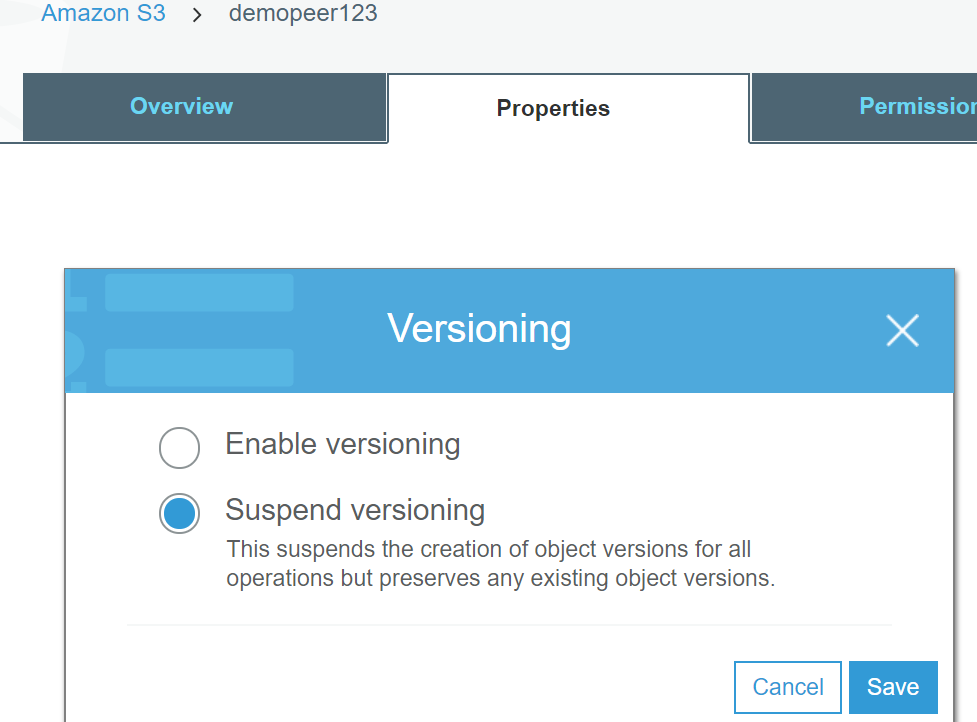
For more information on Amazon S3, please visit the following URL:
Try now labs related to this question
This lab walks you through to the steps how to Enables Versioning to a AWS S3 Bucket. Versioning enables you to keep multiple versions of an object in one bucket. In this lab we learn how to enable object versioning on a S3 bucket.
- Credit Needed10
- Time 0 : 30
An application requires a highly available relational database with an initial storage capacity of 8TB. This database will grow by 8GB every day. To support the expected traffic, at least eight read replicas will be required to handle the database reads. Which AWS service would help to meet these requirements?
Correct Answer – C
AWS Documentation mentions the following:
Aurora Replicas
Aurora Replicas are independent endpoints in an Aurora DB cluster, best used for scaling read operations and increasing availability. Up to 15 Aurora Replicas can be distributed across the Availability Zones that a DB cluster spans within an AWS Region. The DB cluster volume is made up of multiple copies of the data for the DB cluster. However, the data in the cluster volume is represented as a single, logical volume to the primary instance and to Aurora Replicas in the DB cluster.
As a result, all Aurora Replicas return the same data for query results with minimal replica lag—usually, much less than 100 milliseconds after the primary instance has written an update. Replica lag varies depending on the rate of database change. That is, during periods where a large number of write operations occur for the database, you might see an increase in replica lag.
Aurora Replicas work well for read scaling because they are fully dedicated to read operations on your cluster volume. Write operations are managed by the primary instance. Because the cluster volume is shared among all DB instances in your DB cluster, minimal additional work is required to replicate a copy of the data for each Aurora Replica.
To increase availability, you can use Aurora Replicas as failover targets. That is, if the primary instance fails, an Aurora Replica is promoted to the primary instance. There is a brief interruption during which read and write requests made to the primary instance fail with an exception, and the Aurora Replicas are rebooted. If your Aurora DB cluster doesn't include any Aurora Replicas, then your DB cluster will be unavailable for the duration it takes your DB instance to recover from the failure event. However, promoting an Aurora Replica is much faster than recreating the primary instance. For high-availability scenarios, we recommend that you create one or more Aurora Replicas. These should be of the same DB instance class as the primary instance and in different Availability Zones for your Aurora DB cluster.
For more information on Aurora Replicas as failover targets, see Fault Tolerance for an Aurora DB Cluster.
Note:
You can't create an encrypted Aurora Replica for an unencrypted Aurora DB cluster and vice-versa.
For details on how to create an Aurora Replica, see Adding Aurora Replicas to a DB Cluster.
Replication with Aurora MySQL
In addition to Aurora Replicas, you have the following options for replication with Aurora MySQL:
Two Aurora MySQL DB clusters in different AWS Regions, by creating an Aurora Read Replica of an Aurora MySQL DB cluster in a different AWS Region.
Two Aurora MySQL DB clusters in the same region, by using MySQL binary log (binlog) replication.
An Amazon RDS MySQL DB instance as the master and an Aurora MySQL DB cluster, by creating an Aurora Read Replica of an Amazon RDS MySQL DB instance. Typically, this approach is used for migration to Aurora MySQL, rather than for ongoing replication.
For more information on AWS Aurora, please visit the following URL:
Try now labs related to this question
This lab walks you through the creation and testing of an Amazon Aurora database. We will create an Aurora MySQL Database and and test the connection.
- Credit Needed10
- Time 1 : 0
A company has an application that delivers objects from S3 to users. Of late, some users spread across the globe, have been complaining of slow response times. Which additional step would help in building a cost-effective solution and ensure that the users get an optimal response to objects from S3?
Correct Answer - D
AWS Documentation mentions the following:
If your workload is mainly sending GET requests, in addition to the preceding guidelines, you should consider using Amazon CloudFront for performance optimization.
Integrating Amazon CloudFront with Amazon S3, you can distribute content to your users with low latency and a high data transfer rate. You will also send fewer direct requests to Amazon S3, which will reduce your costs.
For example, suppose that you have a few objects that are very popular. Amazon CloudFront fetches those objects from Amazon S3 and caches them. Amazon CloudFront can then serve future requests for the objects from its cache, reducing the number of GET requests it sends to Amazon S3.
For more information on performance considerations in S3, please visit the following URL:
- Option A is incorrect. S3 Cross-Region Replication is not the correct answer for this business scenario. You are asked on how to provide easier & faster access to data in S3 bucket, and this option is used to replicate S3 bucket data across regions.
- Option B is incorrect. S3 TA is used for fast, easy, and secure file transfer over long distances between your client and your Amazon S3 bucket. S3 Transfer Acceleration does leverage Amazon CloudFront’s globally distributed AWS Edge Locations, but would be too costly for this situation.
- Option C is incorrect. ELB is used to distribute traffic on to EC2 Instances.
Try now labs related to this question
This lab walks you through to Amazon CloudFront creation and working. In this lab you will create an Amazon CloudFront distribution. It will distribute a publicly accessible image file stored in an Amazon S3 bucket.
- Credit Needed10
- Time 1 : 30
An application needs to have a messaging system in AWS. It is of the utmost importance that the order of messages is preserved and duplicate messages are not sent. Which of the following services can help fulfill this requirement?
Correct Answer – A
One can use SQS FIFO queues for this purpose.
AWS Documentation mentions the following on SQS FIFO Queues:
Amazon SQS is a reliable and highly-scalable managed message queue service for storing messages in transit between application components. FIFO queues complement the existing Amazon SQS standard queues, which offer high throughput, best-effort ordering, and at-least-once delivery. FIFO queues have essentially the same features as standard queues, but provide the added benefits of supporting ordering and exactly-once processing. FIFO queues provide additional features that help prevent unintentional duplicates from being sent by message producers or from being received by message consumers. Additionally, message groups allow multiple separate ordered message streams within the same queue.
For more information on SQS FIFO Queues, please visit the following URL:
As per AWS, SQS FIFO queues will ensure the delivery of the message only once and it will be delivered in sequential order. (i.e. First in First Out) whereas SNS cannot guarantee the delivery of the message only once.
Read the following AWS SNS FAQ,
Q: How many times will a subscriber receive each message?
Although most of the time each message will be delivered to your application exactly once, the distributed nature of Amazon SNS and transient network conditions could result in occasional, duplicate messages at the subscriber end. Developers should design their applications such that processing a message more than once does not create any errors or inconsistencies.
FIFO FAQs states that
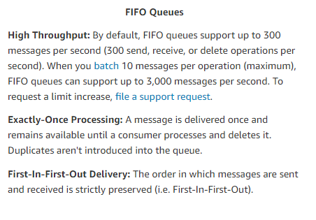
Using SQS FIFO queues will satisfy both the requirements stated in the question.
i.e. Duplication of the message will not occur and the order of messages will be preserved.
A company is planning to build an application using the services available on AWS. This application will be stateless in nature, and the service must have the ability to scale according to the demand. Which compute service should be used in this scenario?
Correct Answer - B
The following content from an AWS Whitepaper supports the usage of AWS Lambda for this requirement:
A stateless application is an application that needs no knowledge of previous interactions and stores no session information. Such an example could be an application that, given the same input, provides the same response to any end-user. A stateless application can scale horizontally since any request can be serviced by any of the available compute resources (e.g., EC2 instances, AWS Lambda functions).
For more information on AWS Cloud best practices, please visit the following URL:
https://d1.awsstatic.com/whitepapers/AWS_Cloud_Best_Practices.pdf
Try now labs related to this question
This lab walks you through creation and usage of AWS Serverless service called AWS Lambda. In this lab, we will create a sample lambda function which is triggered on S3 Object upload event and makes a copy of that object on another S3 Bucket.
- Credit Needed10
- Time 0 : 30
A company has a set of EC2 Instances hosted on the AWS Cloud. These instances form a web server farm which services a web application accessed by users on the Internet. What would help make this architecture more fault-tolerant? (SELECT TWO)
Correct Answer – A and C
AWS Documentation mentions the following:
A load balancer distributes incoming application traffic across multiple EC2 Instances in multiple Availability Zones. This increases the fault tolerance of your applications. Elastic Load Balancing detects unhealthy instances and routes traffic only to healthy instances.
For more information on the AWS Classic Load Balancer, please visit the following URL:
https://docs.aws.amazon.com/elasticloadbalancing/latest/classic/introduction.html
Note:
Autoscaling will not create an ELB automatically, you will need to manually create it in the same region as the AutoScaling group.
Once you create an ELB and attach the load balancer to the autoscaling group, it automatically registers the instances in the group and distributes incoming traffic across the instances.
The following steps provide you information on attaching a load balancer to autoscaling group.
1. Open the Amazon EC2 console at https://console.aws.amazon.com/ec2/
2. On the navigation pane, under Auto Scaling, choose Auto Scaling Groups.
3. Select your group.
4. On the Details tab, choose Edit.
5. Do one of the following:
a. [Classic Load Balancers] For Load Balancers, select your load balancer.
b.[Target groups] For Target Groups, select your target group.
6. Choose Save.
As per AWS,
You can automatically increase the size of your Auto Scaling group when demand goes up and decrease it when demand goes down. As the Auto Scaling group adds and removes EC2 instances, you must ensure that the traffic for your application is distributed across all of your EC2 instances. The Elastic Load Balancing service automatically routes incoming web traffic across such a dynamically changing number of EC2 instances. Your load balancer acts as a single point of contact for all incoming traffic to the instances in your Auto Scaling group.
To use a load balancer with your Auto Scaling group, create the load balancer and then attach it to the group.
For more information, please visit the following URLs:
https://docs.aws.amazon.com/autoscaling/ec2/userguide/autoscaling-load-balancer.html
https://docs.aws.amazon.com/autoscaling/ec2/userguide/attach-load-balancer-asg.html
Try now labs related to this question
This lab walks you through AWS Elastic Load Balancing. Elastic Load Balancing automatically distributes incoming application traffic across multiple Amazon EC2 instances in the cloud. In this lab, we will demonstrate elastic load balancing with 2 EC2 Instances.
- Credit Needed10
- Time 0 : 30
You plan on hosting an application on EC2 Instances which will be used to process logs. The application is not very critical and can resume operation even after an interruption. Which of the following steps could provide a cost-effective solution?
Correct Answer – C
One effective solution would be to use Spot Instances in this scenario.
AWS Documentation mentions the following on Spot Instances:
Spot Instances are a cost-effective choice if you can be flexible about when your applications run and if your applications can be interrupted. For example, Spot Instances are well-suited for data analysis, batch jobs, background processing, and optional tasks.
For more information on using Spot Instances, please visit the following URL:
https://docs.aws.amazon.com/AWSEC2/latest/UserGuide/using-spot-instances.html
A company stores its log data in an S3 bucket. There is a current need to have search capabilities available for the data in S3. What could be helpful to achieve this in an efficient manner? (SELECT TWO )
Correct Answer – A and C
Amazon Athena is a service that enables a data analyst to perform interactive queries in the AWS public cloud on data stored in AWS S3. Since it's a serverless query service, an analyst doesn't need to manage any underlying compute infrastructure to use it.
For more information on Amazon Athena, please refer to the following URLs:
- https://aws.amazon.com/athena/
- https://aws.amazon.com/blogs/aws/amazon-athena-interactive-sql-queries-for-data-in-amazon-s3/
Elasticsearch is a highly scalable open-source full-text search and analytics engine. It allows you to store, search, and analyze big volumes of data quickly and in near real time. It is generally used as the underlying engine/technology that powers applications that have complex search features and requirements.
A company plans to deploy a batch processing application in AWS. Which of the followings would ideally help to host this application? (SELECT TWO)
Correct Answer – B and C
AWS Documentation mentions the following:
Docker containers are particularly suited for batch job workloads. Batch jobs are often short-lived and embarrassingly parallel. You can package your batch processing application into a Docker image so that you can deploy it anywhere, such as in an Amazon ECS task.
For more information on the use cases for AWS ECS, please visit the following URL:
https://docs.aws.amazon.com/AmazonECS/latest/developerguide/common_use_cases.html
An architecture consists of the following:
a) An active/passive infrastructure hosted in AWS
b) Both infrastructures comprise of ELB, Auto Scaling, and EC2 resources
How should Route 53 be configured to ensure proper failover in case the primary infrastructure goes down?
Correct Answer - D
AWS Documentation mentions the following:
You can create an active-passive failover configuration by using failover records. Create a primary and a secondary failover record that has the same name and type, and associate a health check with each.
The various Route 53 routing policies are as follows:
- Simple routing policy – Used for a single resource that performs a given function for your domain, for example, a web server that serves content for the example.com website.
- Failover routing policy – Used when you want to configure active-passive failover.
- Geolocation routing policy – Used when you want to route traffic based on the location of your users.
- Geoproximity routing policy – Used when you want to route traffic based on the location of your resources and, optionally, shift traffic from resources in one location to resources in another.
- Latency routing policy – Used when you have resources in multiple locations and you want to route traffic to the resource that provides the best latency.
- Multivalue answer routing policy – Used when you want Route 53 to respond to DNS queries with up to eight healthy records selected at random.
- Weighted routing policy – Used to route traffic to multiple resources in proportions that you specify.
For more information on DNS Failover using Route 53, please visit the following URL:
Your company uses KMS to fully manage the master keys and performing encryption and decryption operations on your data and in your applications. As an additional level of security, you now recommend AWS rotate your keys. What would happen after enabling this additional feature?
Correct Answer: A
- Option A is correct. KMS will rotate keys annually and use the appropriate keys to perform cryptographic operations.
- Option B is incorrect. This is not necessary. KMS, as a managed service, will keep old keys and perform operations based on the appropriate key
- Option C is incorrect. This is not a requirement of KMS.
- Option D is incorrect. This is not a requirement of KMS
References:
You are a Solutions Architect in a startup company that is releasing the first iteration of its app. Your company doesn’t have a directory service for its intended users but wants the users to be able to sign in and use the app. What would you advice to implement a solution quickly?
Correct Answer: D
- Option D is correct. Cognito is a managed service that can be used for this app and scale quickly as usage grows.
- Option A is incorrect. Cognitio supports more than just social identity providers, including OIDC, SAML, and its own identity pools
- Option B is incorrect. This isn’t an efficient means of managing user authentication.
- Option C is incorrect. This isn’t the most efficient means to authenticate and save user information.
References:
- https://aws.amazon.com/cognito/
- http://docs.aws.amazon.com/apigateway/latest/developerguide/apigateway-integrate-with-cognito.html
- https://docs.aws.amazon.com/cognito/latest/developerguide/cognito-user-identity-pools.html
- https://aws.amazon.com/cognito/getting-started/
- https://docs.aws.amazon.com/cognito/latest/developerguide/concepts.html
A company is migrating an on-premises 5TB MySQL database to AWS and expects its database size to increase steadily. Which Amazon RDS engine would meet these requirements?
Correct Answer – D
AWS Documentation supports the above requirements with regard to AWS Aurora.
Amazon Aurora (Aurora) is a fully managed, MySQL and PostgreSQL compatible, relational database engine. It combines the speed and reliability of high-end commercial databases with the simplicity and cost-effectiveness of open-source databases. It delivers up to five times the throughput of MySQL and up to three times the throughput of PostgreSQL without requiring changes to most of your existing applications.
All Aurora Replicas return the same data for query results with minimal replica lag—usually, much lesser than 100 milliseconds after the primary instance has written an update.
For more information on AWS Aurora, please visit the following URL:
http://docs.aws.amazon.com/AmazonRDS/latest/UserGuide/Aurora.Overview.html
NOTE:
On a MySQL DB instance, avoid tables in your database growing too large. Provisioned storage limits restrict the maximum size of a MySQL table file to 16 TB
However, based on database usage, your Amazon Aurora storage will automatically grow, from the minimum of 10 GB up to 64 TB, in 10 GB increments, with no impact on database performance.
Hence, the best answer would be option D.
Try now labs related to this question
This lab walks you through the creation and testing of an Amazon Aurora database. We will create an Aurora MySQL Database and and test the connection.
- Credit Needed10
- Time 1 : 0
You have implemented AWS Cognito services to require users to sign in and sign up to your app through social identity providers like Facebook, Google, etc. Your marketing department wants users to try out the app anonymously as they think that the current log-in requirement is excessive and will reduce demand for products and services offered through the app. What would you suggest to the marketing department in this regard?
Correct Answer - B
- Option B is correct. Amazon Cognito Identity Pools can support unauthenticated identities by providing a unique identifier and AWS credentials for users who do not authenticate with an identity provider. Unauthenticated users can be associated with a role that has limited access to resources as compared to a role for authenticated users.
- Option A is incorrect. Cognito will allow unauthenticated users without being a security risk.
- Option C is incorrect. Cognito supports both authenticated and unauthenticated users.
References:
- https://aws.amazon.com/cognito/
- http://docs.aws.amazon.com/apigateway/latest/developerguide/apigateway-integrate-with-cognito.html
- https://docs.aws.amazon.com/cognito/latest/developerguide/cognito-user-identity-pools.html
- https://docs.aws.amazon.com/cognito/latest/developerguide/identity-pools.html
- https://aws.amazon.com/cognito/getting-started/
- https://docs.aws.amazon.com/cognito/latest/developerguide/concepts.html
Your app uses AWS Cognito Identity for authentication and stores user profiles in a User Pool. To expand the availability and ease of signing in to the app, your team is requesting advice on allowing the use of OpenID Connect (OIDC) identity providers as additional means of authenticating users and saving the user profile information. What is your recommendation on OIDC identity providers?
Correct Answer - A
- Option A is correct. OpenID Connect (OIDC) identity providers (IdPs) (like Salesforce or Ping Identity) are supported in Cognito, along with social and SAML based identity providers. You can add an OIDC IdP to your user pool in the AWS Management Console, with the AWS CLI, or by using the user pool API method CreateIdentityProvider.
- Option B is incorrect. Cognito supports more than just social identity providers, including OIDC, SAML, and its own identity pools.
- Option C is incorrect. You can add any combination of federated types, you don’t have to add them all.
- Option D is incorrect. While there is additional coding to develop this, the effort is most likely not too great to add the feature.
References:
- https://aws.amazon.com/cognito/
- https://docs.aws.amazon.com/cognito/latest/developerguide/cognito-user-pools-oidc-idp.html
- http://docs.aws.amazon.com/apigateway/latest/developerguide/apigateway-integrate-with-cognito.html
- https://docs.aws.amazon.com/cognito/latest/developerguide/cognito-user-identity-pools.html
- https://aws.amazon.com/cognito/getting-started/
- https://docs.aws.amazon.com/cognito/latest/developerguide/concepts.html
Try now labs related to this question
This lab walks you through to Amazon CloudFront creation and working. In this lab you will create an Amazon CloudFront distribution. It will distribute a publicly accessible image file stored in an Amazon S3 bucket.
- Credit Needed10
- Time 1 : 30
A company is building a two-tier web application to serve dynamic transaction-based content. Which services would you leverage to enable an elastic and scalable Web Tier?
Correct Answer – A
The question mentions a scalable Web Tier. So Option B, C, and D can be eliminated since they are database related options.
The below example ( this is a general depiction giving the deployment design of standby architecture having a two tier in them ) shows an Elastic Load Balancer connected to 2 EC2 instances via Auto Scaling. This is an example of an elastic and scalable Web Tier. By scalable, we mean that the Auto Scaling process is able to increase or decrease the number of EC2 Instances as required.
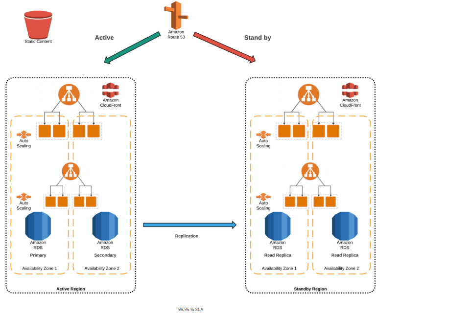
For more information on the Elastic Load Balancer, please refer to the URL below.
Try now labs related to this question
AWS Auto Scaling will automatically scale resources as needed to align to your selected scaling strategy, This lab walks you through to use Auto Scaling to automatically launch or terminate EC2’s instances based on user defined policies, schedules and health checks.
- Credit Needed10
- Time 0 : 55
An instance is launched into a VPC subnet with the network ACL configured to allow all outbound traffic and deny all inbound traffic. The security group of the instance is configured to allow SSH from any IP address. What changes are required to allow SSH access to the instance?
Correct Answer – B
For an EC2 Instance to allow SSH, you can have the below configurations for the Security and Network ACL for Inbound and Outbound Traffic.
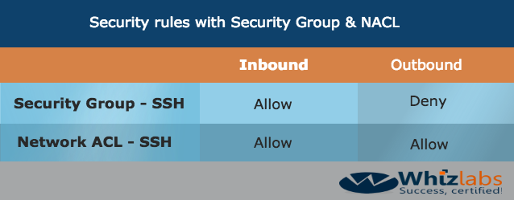
The reason why Network ACL has to have both an Allow for Inbound and Outbound is that network ACLs are stateless. Responses to allowed inbound traffic are subject to the rules for outbound traffic (and vice versa). Whereas for Security groups, responses are stateful. So if an incoming request is granted, by default an outgoing request will also be granted.
- Options A and D are invalid because Security Groups are stateful. Here, any traffic allowed in the Inbound rule is allowed in the Outbound rule too. Option C is also incorrect.
For more information on Network ACLs, please refer to the URL below.
Try now labs related to this question
-
Learn how to build Public and Private subnets from scratch.
-
VPC wizard will not be used. So every component required to build public and private subnets will be created and configured manually.
-
This will give an in-depth understanding of internal components of VPC and subnets.
- Credit Needed10
- Time 0 : 30
Your company currently has a web distribution hosted using the AWS CloudFront service. The IT Security department has confirmed that the application using this web distribution now falls under the scope of PCI compliance. What are the possible ways to meet the requirements? (SELECT TWO)
Correct Answer – A and C
AWS Documentation mentions the following:
If you run PCI or HIPAA-compliant workloads based on the AWS Shared Responsibility Model, we recommend that you log your CloudFront usage data for the last 365 days for future auditing purposes. To log usage data, you can do the following:
- Enable CloudFront access logs.
- Capture requests that are sent to the CloudFront API.
For more information on compliance with CloudFront, please visit the following URLs:
- https://docs.aws.amazon.com/AmazonCloudFront/latest/DeveloperGuide/AccessLogs.html
- https://aws.amazon.com/blogs/aws/pci-compliance-for-amazon-cloudfront/
- https://docs.aws.amazon.com/AmazonCloudFront/latest/DeveloperGuide/SERVICENAME-compliance.html
- Option B is incorrect. It helps to reduce latency.
- Option D is incorrect. VPC flow logs capture information about the IP traffic going to and from network interfaces in a VPC but not for CloudFront.
Try now labs related to this question
This lab walks you through to Amazon CloudFront creation and working. In this lab you will create an Amazon CloudFront distribution. It will distribute a publicly accessible image file stored in an Amazon S3 bucket.
- Credit Needed10
- Time 1 : 30